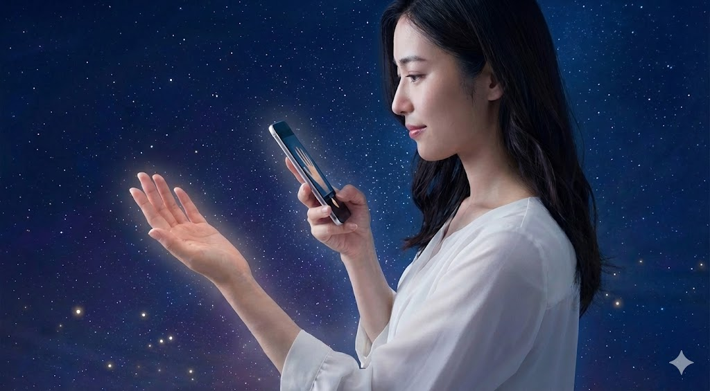
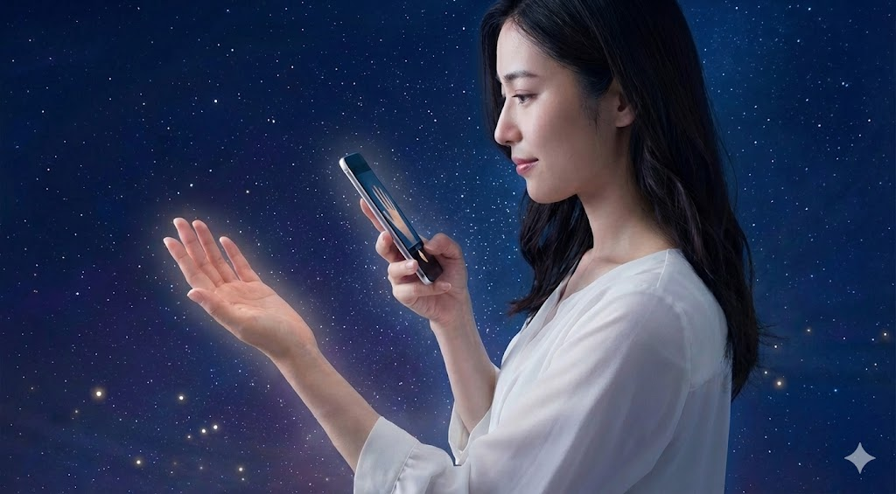

Aurora Spiritual Palm
オーロラの光をまとった幻想的なトーン。グラスモーフィズムのカードで、メニューやお客様の声を浮かび上がらせました。
オーロラの光をまとった幻想的なトーン。グラスモーフィズムのカードで、メニューやお客様の声を浮かび上がらせました。
「ふんわりした不安が、言葉とビジョンで整理されました。静かなのに力強い時間でした。」
「未来の流れが具体的にイメージでき、行動の優先順位が決まりました。」
「グラスのような透明感あるUIが好き。鑑定後のフォローが丁寧で心強いです。」